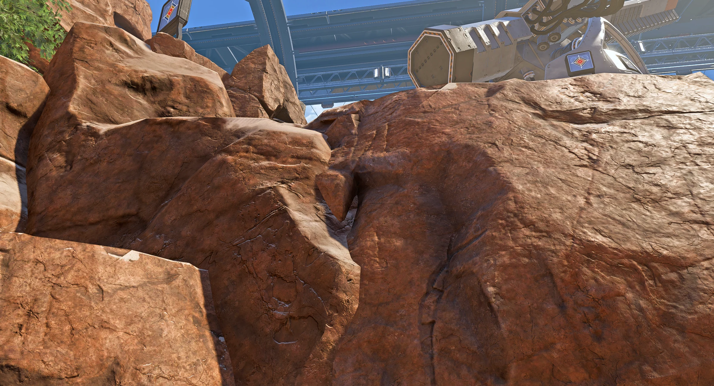
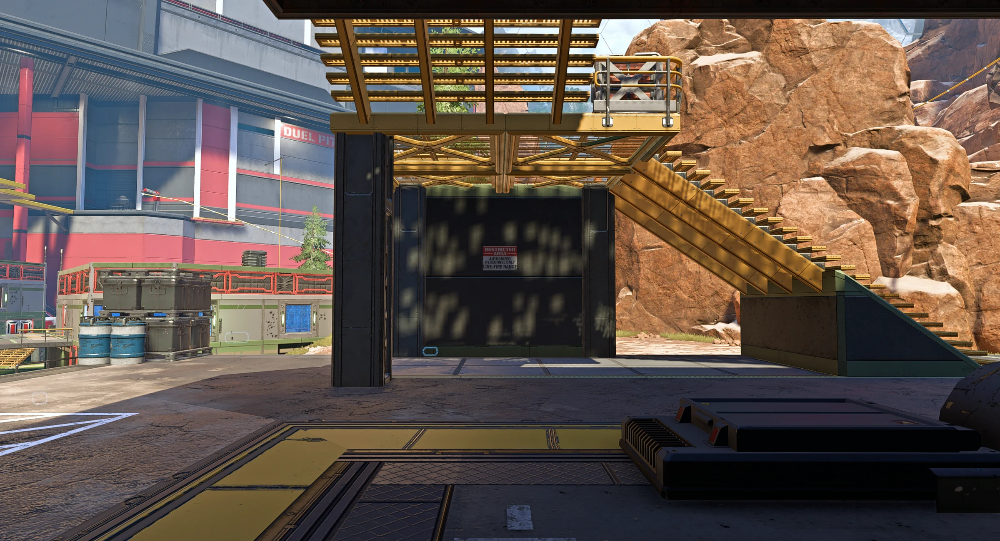
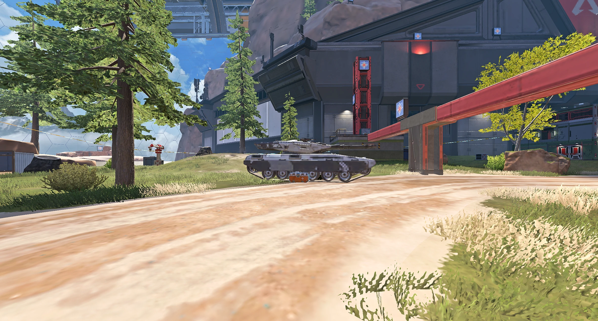

Recommended
Auto profile
Riftline reads your graphics hardware and chooses the safest high-FPS profile for this PC.
1 clickBacked up first
SafeNo game-file edits
FastOfficial launch path
Performance command center
Choose a tuned starting point, review the exact changes, then launch through the official Steam route.
Riftline reads your graphics hardware and chooses the safest high-FPS profile for this PC.
Native output · low-latency profile · automatic backup
Performance profiles
Every preset is reversible. Resolution-changing profiles are labeled clearly.
Named profiles
Output and render scale
Control the final picture, screen shape, and how far internal 3D resolution may scale under load.
Final display and HUD dimensions
Choose exactly how non-native aspect ratios fill your display
Fullscreen gives stretched modes the cleanest path
Lowers only world rendering when the GPU misses target FPS
Rendering quality
Keep the details that matter to you and cut the effects that cost frames.

3 GBReal in-game setting preview
See the supplied capture for the exact value. Select or toggle a setting below to compare it.
Apex's streaming tiers — match your graphics card's VRAM
Sharpness of surfaces and weapon skins
Keeps angled surfaces clear
Smooths jagged edges
Distance before simpler models appear
Density of smoke, sparks, and explosions
Directional shadows on buildings and terrain
Volumetric light beams and haze
Soft contact shading in corners
Additional environmental set dressing
Bullet holes and scorch decals
Bodies remaining after combat
Stops tearing but can add latency
NVIDIA Reflex / AMD low latency
Engine-level controls
Fine-tune memory, shadows, distance, particles, physics, and field of view.

512Real in-game setting preview
The preview follows the advanced control you focus or change.
Official Steam launch path
Customize the complete safe launch line, reticle color, frame limits, language, display behavior, and expert switches.

LIVE RETICLE PREVIEWProfile-level customization
Uses Apex's saved RGB reticle setting with a backup. The color stays inside the normal 0–255 range.
Command library
+fps_maxGame default adds nothing; 0 is uncapped
+lobby_max_fpsSeparate limit for menus and the lobby
+cl_showfpsOptional in-game performance readout
-novidFaster path to the menu
-nojoyMouse-and-keyboard systems only
-forcenovsyncLower latency; possible tearing
-highExperimental; watch background apps
-devPatch-sensitive startup behavior
-refreshFullscreen refresh rate in Hz
DX12Official DX12 mode; off uses DX11
+m_rawinput 1Skips Windows mouse acceleration
-preload +cl_forcepreload 1Less mid-match stutter; longer loads
+mat_queue_mode 2Patch-sensitive; usually already on
-threadsExperimental; Auto is safest
-softparticlesdefaultoffSmall FPS gain in smoke and fire
+cl_motionblur 0Sharper image while turning
+r_drawtracers_firstperson 0Clearer view while spraying
+mat_disable_bloom 1Less glare; small FPS gain
+cl_is_softened_locale 1Sparks instead of blood
+cl_showpos 1Movement practice overlay
+mat_minimize_on_alt_tab 1Cleaner switching out of fullscreen
+execOptional config filename
-languageInterface and subtitles; voice follows installed Steam files
Checking installed language files…EXPERTOptional commands you already trust
Backups and recovery
See exactly where Riftline writes, lock the result, or return to regular Apex.
Riftline temporarily unlocks the file to apply changes, then restores the lock.
Restores the newest video, latency, and FOV backups.
Restores the earliest pre-Riftline files and clears app-managed launch commands.
Use only for corrupted shaders or update-related visual problems.